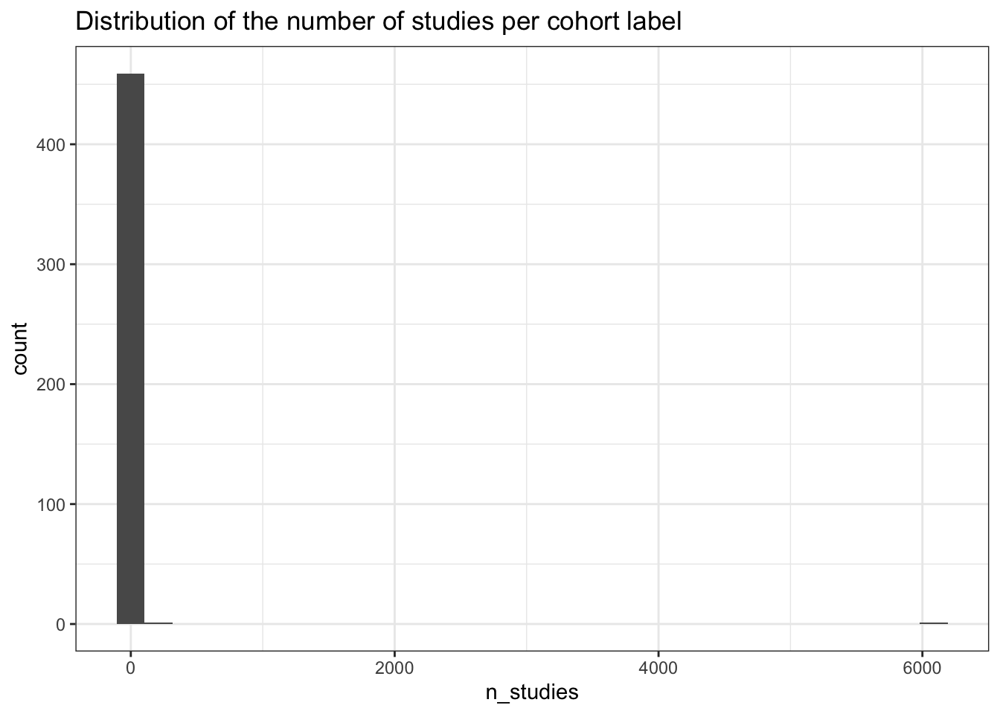

Last updated: 2026-03-24
Checks: 7 0
Knit directory:
genomics_ancest_disease_dispar/
This reproducible R Markdown analysis was created with workflowr (version 1.7.2). The Checks tab describes the reproducibility checks that were applied when the results were created. The Past versions tab lists the development history.
Great! Since the R Markdown file has been committed to the Git repository, you know the exact version of the code that produced these results.
Great job! The global environment was empty. Objects defined in the global environment can affect the analysis in your R Markdown file in unknown ways. For reproduciblity it’s best to always run the code in an empty environment.
The command set.seed(20220216) was run prior to running
the code in the R Markdown file. Setting a seed ensures that any results
that rely on randomness, e.g. subsampling or permutations, are
reproducible.
Great job! Recording the operating system, R version, and package versions is critical for reproducibility.
Nice! There were no cached chunks for this analysis, so you can be confident that you successfully produced the results during this run.
Great job! Using relative paths to the files within your workflowr project makes it easier to run your code on other machines.
Great! You are using Git for version control. Tracking code development and connecting the code version to the results is critical for reproducibility.
The results in this page were generated with repository version dd7d308. See the Past versions tab to see a history of the changes made to the R Markdown and HTML files.
Note that you need to be careful to ensure that all relevant files for
the analysis have been committed to Git prior to generating the results
(you can use wflow_publish or
wflow_git_commit). workflowr only checks the R Markdown
file, but you know if there are other scripts or data files that it
depends on. Below is the status of the Git repository when the results
were generated:
Ignored files:
Ignored: .DS_Store
Ignored: .Rproj.user/
Ignored: .venv/
Ignored: Aus_School_Profile.xlsx
Ignored: BC2GM/
Ignored: BioC.dtd
Ignored: FormatConverter.jar
Ignored: FormatConverter.zip
Ignored: SeniorSecondaryCompletionandAchievementInformation_2025.xlsx
Ignored: analysis/.DS_Store
Ignored: ancestry_dispar_env/
Ignored: code/.DS_Store
Ignored: code/full_text_conversion/.DS_Store
Ignored: data/.DS_Store
Ignored: data/RCDCFundingSummary_01042026.xlsx
Ignored: data/cdc/
Ignored: data/cohort/
Ignored: data/epmc/
Ignored: data/europe_pmc/
Ignored: data/gbd/.DS_Store
Ignored: data/gbd/IHME-GBD_2021_DATA-d8cf695e-1.csv
Ignored: data/gbd/IHME-GBD_2023_DATA-73cc01fd-1.csv
Ignored: data/gbd/gbd_2019_california_percent_deaths.csv
Ignored: data/gbd/ihme_gbd_2019_global_disease_burden_rate_all_ages.csv
Ignored: data/gbd/ihme_gbd_2019_global_paf_rate_percent_all_ages.csv
Ignored: data/gbd/ihme_gbd_2021_global_disease_burden_rate_all_ages.csv
Ignored: data/gbd/ihme_gbd_2021_global_paf_rate_percent_all_ages.csv
Ignored: data/gwas_catalog/
Ignored: data/icd/.DS_Store
Ignored: data/icd/2025AA/
Ignored: data/icd/IHME_GBD_2019_COD_CAUSE_ICD_CODE_MAP_Y2020M10D15.XLSX
Ignored: data/icd/IHME_GBD_2019_NONFATAL_CAUSE_ICD_CODE_MAP_Y2020M10D15.XLSX
Ignored: data/icd/IHME_GBD_2021_COD_CAUSE_ICD_CODE_MAP_Y2024M05D16.XLSX
Ignored: data/icd/IHME_GBD_2021_NONFATAL_CAUSE_ICD_CODE_MAP_Y2024M05D16.XLSX
Ignored: data/icd/UK_Biobank_master_file.tsv
Ignored: data/icd/cdc_valid_icd10_Sep_23_2025.xlsx
Ignored: data/icd/cdc_valid_icd9_Sep_23_2025.xlsx
Ignored: data/icd/hp_umls_mapping.csv
Ignored: data/icd/lancet_conditions_icd10.xlsx
Ignored: data/icd/manual_disease_icd10_mappings.xlsx
Ignored: data/icd/mondo_umls_mapping.csv
Ignored: data/icd/phecode_international_version_unrolled.csv
Ignored: data/icd/phecode_to_icd10_manual_mapping.xlsx
Ignored: data/icd/semiautomatic_ICD-pheno.txt
Ignored: data/icd/semiautomatic_ICD-pheno_UKB_subset.txt
Ignored: data/icd/umls-2025AA-mrconso.zip
Ignored: doccano_venv/
Ignored: figures/
Ignored: output/.DS_Store
Ignored: output/abstracts/
Ignored: output/cluster_tuning.csv
Ignored: output/doccano/
Ignored: output/fulltexts/
Ignored: output/gwas_cat/
Ignored: output/gwas_cohorts/
Ignored: output/icd_map/
Ignored: output/pubmedbert_entity_predictions.csv
Ignored: output/pubmedbert_entity_predictions.jsonl
Ignored: output/pubmedbert_predictions.csv
Ignored: output/pubmedbert_predictions.jsonl
Ignored: output/supplement/
Ignored: output/text_mining_predictions/
Ignored: output/trait_ontology/
Ignored: population_description_terms.txt
Ignored: pubmedbert-cohort-ner-model/
Ignored: pubmedbert-cohort-ner/
Ignored: renv/
Ignored: spacy_venv_requirements.txt
Ignored: spacyr_venv/
Untracked files:
Untracked: analysis/get_supplement.Rmd
Untracked: code/extract_text/download_pmc_supplements_aws.sh
Untracked: code/full_text_conversion/html_to_xml.R
Untracked: code/test_cohort_desc_file.R
Untracked: code/text_mining_models/tokenise_data.py
Untracked: output/best_similarity_histogram.png
Untracked: output/cluster_tuning_plot.png
Untracked: output/cluster_tuning_plot_by_min_size.png
Untracked: output/similarities_histogram.png
Untracked: output/similarities_histogram_abstracts.png
Untracked: output/similarities_histogram_methods.png
Untracked: output/similarities_histogram_overlay.png
Untracked: schools.R
Unstaged changes:
Modified: analysis/disease_inves_by_ancest.Rmd
Modified: analysis/get_dbgap_ids.Rmd
Modified: analysis/get_full_text.Rmd
Modified: analysis/gwas_to_gbd.Rmd
Modified: analysis/index.Rmd
Modified: analysis/map_trait_to_icd10.Rmd
Modified: analysis/replication_ancestry_bias.Rmd
Modified: analysis/specific_aims_stats.Rmd
Modified: analysis/text_for_cohort_labels.Rmd
Modified: code/extract_text/sentence_embeddings.py
Modified: code/extract_text/spacy_obtain_sentences.py
Note that any generated files, e.g. HTML, png, CSS, etc., are not included in this status report because it is ok for generated content to have uncommitted changes.
These are the previous versions of the repository in which changes were
made to the R Markdown (analysis/cohort_dist.Rmd) and HTML
(docs/cohort_dist.html) files. If you’ve configured a
remote Git repository (see ?wflow_git_remote), click on the
hyperlinks in the table below to view the files as they were in that
past version.
| File | Version | Author | Date | Message |
|---|---|---|---|---|
| Rmd | dd7d308 | IJbeasley | 2026-03-24 | Add comments etc. to cohort metadata investigations |
| html | ea09200 | IJbeasley | 2026-03-24 | Build site. |
| Rmd | 615467f | IJbeasley | 2026-03-24 | Add comments etc. to cohort metadata investigations |
| html | b0769c5 | IJbeasley | 2025-08-21 | Build site. |
| Rmd | 60e1a17 | IJbeasley | 2025-08-21 | Updating cohort distribution analysis |
knitr::opts_chunk$set(echo = TRUE, message = FALSE, warning = FALSE)
library(data.table)
library(dplyr)
library(ggplot2)
library(stringr)This analysis uses two GWAS Catalog datasets: a study-level metadata file (with cohort labels corrected in a prior step), and an ancestry-level metadata file. The goal is to understand the structure of these datasets and how cohort labels are distributed across studies.
# Load the cohort-corrected study metadata (produced by an earlier processing step)
# rather than the raw GWAS Catalog studies file
gwas_study_info <- fread(here::here("output/gwas_cohorts/gwas_cohort_name_corrected.csv"))
# Load the GWAS Catalog ancestry metadata (one row per ancestry group per study)
gwas_ancest_info <- fread(here::here("data/gwas_catalog/gwas-catalog-v1.0.3.1-ancestries-r2025-07-21.tsv"),
sep = "\t", quote = "")
# Standardize column names (remove spaces) for easier programmatic access
gwas_study_info <- gwas_study_info |>
rename_all(~gsub(" ", "_", .x))
gwas_ancest_info <- gwas_ancest_info |>
rename_all(~gsub(" ", "_", .x))How many rows per PubMed ID in each dataset? A single publication (PubMed ID) can contain multiple GWAS studies (e.g., studying different traits), so PubMed IDs can map to many rows. In the ancestry dataset, the median is 2 rows per PubMed ID but the maximum is 11,670. In the study dataset, the median is 1 but the maximum is 7,972 – reflecting large-scale studies that report thousands of trait associations.
# Distribution of rows per PubMed ID in ancestry info
# Median is 2, but max is 11,670 (very right-skewed)
gwas_ancest_info |>
group_by(PUBMED_ID) |>
summarise(n = n()) |>
pull(n) |>
summary() Min. 1st Qu. Median Mean 3rd Qu. Max.
1.00 2.00 2.00 27.38 4.00 11670.00 # Distribution of rows per PubMed ID in study info
# Median is 1, max is 7,972
gwas_study_info |>
group_by(PUBMED_ID) |>
summarise(n = n()) |>
pull() |>
summary() Min. 1st Qu. Median Mean 3rd Qu. Max.
1 1 1 1 1 1 The two datasets share only four columns in common: PUBMED_ID, FIRST_AUTHOR, DATE, and STUDY_ACCESSION. STUDY_ACCESSION is the key for joining the two datasets.
# Identify shared columns between the two datasets
colnames(gwas_ancest_info)[colnames(gwas_ancest_info) %in% colnames(gwas_study_info)][1] "PUBMED_ID" "DATE" colnames(gwas_study_info)[colnames(gwas_study_info) %in% colnames(gwas_ancest_info)][1] "PUBMED_ID" "DATE" More rows in the ancestry dataset than the study dataset, because study accessions with multiple ancestry groups get multiple rows in the ancestry file.
There are 1,205 unique cohort labels in the dataset. However, the distribution of studies per cohort is extremely right-skewed: the median cohort has only 2 studies, but the largest (UK Biobank) has 38,265. The second most common “cohort” is an empty string (15,019 studies with no cohort label), followed by “other” (8,529). This highlights that cohort metadata is often missing or generic.
# 1,205 unique cohort labels
length(unique(gwas_study_info$COHORT))[1] 461# Count studies per cohort, sorted by most common
studies_per_cohort = gwas_study_info |>
group_by(COHORT) |>
summarise(n_studies = n()) |>
arrange(desc(n_studies))
# Very right-skewed: median 2, mean 118.5, max 38,265
summary(studies_per_cohort$n_studies) Min. 1st Qu. Median Mean 3rd Qu. Max.
1.00 1.00 1.00 15.89 2.00 6087.00 # Histogram shows the long tail -- most cohorts have few studies,
# but a handful of mega-cohorts (UKBB, MVP, etc.) dominate
studies_per_cohort |>
ggplot(aes(x=n_studies)) +
geom_histogram() +
theme_bw() +
labs(title = "Distribution of the number of studies per cohort label")
# Top 10 cohorts: UKBB (38,265), empty string (15,019), other (8,529),
# MVP (7,669), AASK (6,790), AGES (4,782), CLSA (4,449), ...
dplyr::slice_head(studies_per_cohort, n = 10)# A tibble: 10 × 2
COHORT n_studies
<chr> <int>
1 "" 6087
2 "UKBB" 113
3 "BioMe" 39
4 "FinnGen" 33
5 "GERA" 32
6 "BBJ" 28
7 "MESA" 22
8 "BioVU" 21
9 "HUNT" 21
10 "MGI" 20Some COHORT values contain multiple cohort names separated by “|” (pipe). After splitting on “|”, there are 1,078 unique individual cohort names (fewer than the 1,205 unique combined labels, since some cohorts appear in multi-cohort combinations). Of these, 208 cohorts appear in only a single study.
# Split pipe-separated cohort labels into individual cohort names
all_cohorts = gwas_study_info$COHORT
all_cohorts = unlist(strsplit(all_cohorts, "\\|"))
# 1,078 unique individual cohort names after splitting
length(unique(all_cohorts))[1] 360# After splitting, each individual cohort appears in more studies on average
# (median 5, mean 205.4, max 43,189) compared to the combined labels
data.frame(cohort = all_cohorts) |>
group_by(cohort) |>
summarise(n_studies = n()) |>
pull(n_studies) |>
summary() Min. 1st Qu. Median Mean 3rd Qu. Max.
1.000 1.000 2.000 4.575 3.000 163.000 # 208 cohort names appear in only a single study
single_use_cohorts_v2 =
data.frame(cohort = all_cohorts) |>
group_by(cohort) |>
summarise(n_studies = n()) |>
filter(n_studies == 1) |>
pull(cohort)
single_use_cohorts_v2 |> unique() |> length()[1] 176No – the relationship between PubMed IDs and cohorts is one-to-many. While the median PubMed ID maps to just 1 cohort, some map to as many as 55 different cohorts. This happens because a single publication can report results from multiple cohorts (e.g., a meta-analysis combining data from GECCO, CORECT, CORSA, etc.).
# Most publications use a single cohort (median 1),
# but some use up to 55 different cohorts
gwas_study_info |>
select(PUBMED_ID, COHORT) |>
distinct() |>
group_by(PUBMED_ID) |>
summarise(n_pubmed = n()) |>
pull(n_pubmed) |>
summary() Min. 1st Qu. Median Mean 3rd Qu. Max.
1 1 1 1 1 1 # Find PubMed IDs associated with multiple cohorts
pubmed_multi_cohort =
gwas_study_info |>
select(PUBMED_ID, COHORT) |>
distinct() |>
group_by(PUBMED_ID) |>
summarise(n_pubmed = n()) |>
filter(n_pubmed > 1) |>
pull(PUBMED_ID)
# Example: PubMed ID 30510241 has studies from GECCO, CORECT, CORSA,
# and one study with no cohort label -- typical of multi-cohort meta-analyses
gwas_study_info |>
filter(PUBMED_ID %in% pubmed_multi_cohort) |>
select(PUBMED_ID, COHORT) |>
head()Empty data.table (0 rows and 2 cols): PUBMED_ID,COHORT
sessionInfo()R version 4.3.1 (2023-06-16)
Platform: aarch64-apple-darwin20 (64-bit)
Running under: macOS 26.3.1
Matrix products: default
BLAS: /Library/Frameworks/R.framework/Versions/4.3-arm64/Resources/lib/libRblas.0.dylib
LAPACK: /Library/Frameworks/R.framework/Versions/4.3-arm64/Resources/lib/libRlapack.dylib; LAPACK version 3.11.0
locale:
[1] en_US.UTF-8/en_US.UTF-8/en_US.UTF-8/C/en_US.UTF-8/en_US.UTF-8
time zone: America/Los_Angeles
tzcode source: internal
attached base packages:
[1] stats graphics grDevices datasets utils methods base
other attached packages:
[1] stringr_1.6.0 ggplot2_3.5.2 dplyr_1.1.4 data.table_1.17.8
[5] workflowr_1.7.2
loaded via a namespace (and not attached):
[1] gtable_0.3.6 jsonlite_2.0.0 compiler_4.3.1
[4] BiocManager_1.30.26 renv_1.1.8 promises_1.3.3
[7] tidyselect_1.2.1 Rcpp_1.1.0 git2r_0.36.2
[10] callr_3.7.6 later_1.4.4 jquerylib_0.1.4
[13] scales_1.4.0 yaml_2.3.10 fastmap_1.2.0
[16] here_1.0.1 R6_2.6.1 labeling_0.4.3
[19] generics_0.1.4 knitr_1.50 tibble_3.3.0
[22] rprojroot_2.1.0 RColorBrewer_1.1-3 bslib_0.9.0
[25] pillar_1.11.1 rlang_1.1.6 utf8_1.2.6
[28] cachem_1.1.0 stringi_1.8.7 httpuv_1.6.16
[31] xfun_0.55 getPass_0.2-4 fs_1.6.6
[34] sass_0.4.10 cli_3.6.5 withr_3.0.2
[37] magrittr_2.0.4 ps_1.9.1 grid_4.3.1
[40] digest_0.6.37 processx_3.8.6 rstudioapi_0.17.1
[43] lifecycle_1.0.4 vctrs_0.6.5 evaluate_1.0.5
[46] glue_1.8.0 farver_2.1.2 whisker_0.4.1
[49] rmarkdown_2.30 httr_1.4.7 tools_4.3.1
[52] pkgconfig_2.0.3 htmltools_0.5.8.1